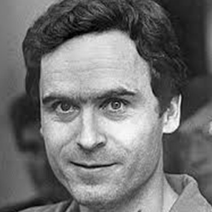
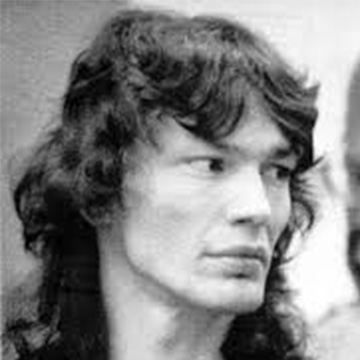
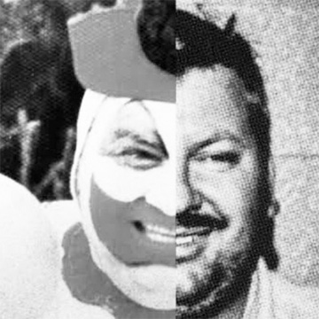
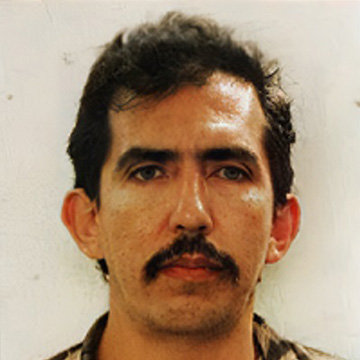
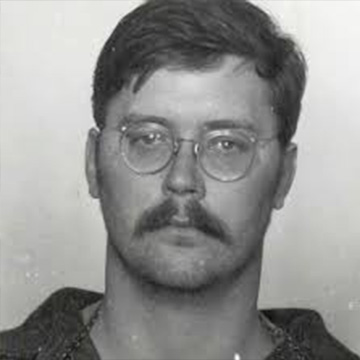
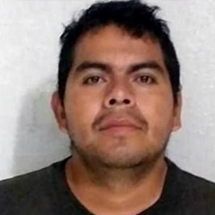

Detrás de cada uno de estos nombres hay historias reales que marcaron comunidades enteras. Lejos de ser
solo relatos perturbadores, estos casos muestran cómo el miedo, la incertidumbre y la violencia pueden
afectar profundamente a la sociedad. Recordarlos también implica reconocer a las víctimas y entender la
importancia de no ignorar las señales.
Además, muchos de estos casos evidencian fallas en los sistemas de justicia, en la atención a las
víctimas y en la prevención del delito, lo que permitió que continuaran durante más tiempo del que
debieron. También reflejan cómo los medios de comunicación pueden influir en la percepción pública,
amplificando el impacto social de estos hechos.
Más allá del interés que puedan generar, es importante abordarlos con respeto y conciencia,
comprendiendo
que no se trata solo de historias, sino de realidades que dejaron consecuencias profundas y duraderas.
LOS ASESINOS SERIALES MÁS FAMOSOS

Ted Bundy
Asesino serial estadounidense de los años 70, conocido por su carisma y capacidad de manipulación.
Leer más
Richard Ramirez
“El Night Stalker” aterrorizó California en los años 80 con ataques impredecibles.
Leer más
John Wayne Gacy
Conocido como “Pogo el payaso”, llevaba una doble vida dentro de su comunidad.
Leer másJeffrey Dahmer
Conocido como “el caníbal de Milwaukee”, su caso impactó por la evidencia encontrada en su hogar.
Leer más

